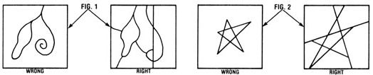
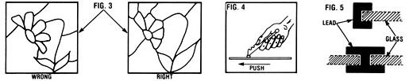

Stained Glass: The Sun-Catching Craft
By Susan Cobb Zenni
March/April 1981
This art form can provide you with hours of satisfaction and an at-home income as well!
Six years ago, when I bought my first glass cutter, I had little idea that an interest in working with stained glass would eventually allow me to escape the drudgery of the 9-to-5 lifestyle and go into business for myself!
However, I soon discovered that making and selling stained glass items is one of the most rewarding crafts imaginable! And anyone who has a little patience and determination to spare can learn the basic techniques very quickly.
GETTING STARTED
The first thing you'll want to do is find a roomy work area. The best bet will probably be a table or bench in an unused part of the garage, den, porch, or extra bedroom. A sheet of 3/4" plywood, set on two sawhorses, will serve as an ideal workbench that provides plenty of space ... and can be rapidly disassembled if necessary.
If you have small children in your family, you'll have to make a special effort to keep your work area off-limits to curious fingers ... because broken glass pieces and strips of lead are extremely hazardous. So be sure the space you decide to use for your sun-catching art is situated away from your home's regular traffic patterns.
MAKING DESIGNS
Once your crafts area is arranged, you can start right in and work up a design for your "window art". There are many pattern books on the market (which contain black-and-white line drawings), but most of their designs are too complicated for a beginning effort ... so you may want to plan your first piece yourself. If you stick with simple shapes, straight lines, and/or gentle curves - and limit the size of the project (keep both dimensions between 10 and 18 inches) and the number of glass parts (15 to 25 pieces) - you should have little difficulty.
To begin, draw your design on graph paper, to keep it square and in proportion . As a rule of thumb, the shapes in the pattern should comply with the following guidelines: [1] Never draw a "lead line" (one that indicates the position of the lead that will hold your shards together) that stops in space. All such lines must be connected to other lead lines (see Fig. 1). [2] Never design a right or acute angle without adding at least one lead line from the "point" of the angle (see Fig. 2). [3] Always divide any large pieces of background glass into small shapes, and avoid having tight curves that jut into such shapes (see Fig. 3).
When you've completed your design and sketched it full size on a sturdy piece of paper, go over the lead lines with a finepoint permanent marking pen. This pen should draw a line about 1/16" wide . . . just the right size for your "lead allowance", the space which will be taken up by the leading. (It's very important to incorporate this allowance into your pattern . . . if you don't do so, the glass panel may distort as you place the lead strips between its pieces.)
CUTTING THE GLASS
Glass cutting is really a simple skill which, for some unknown reason, most folks think of as being cloaked in mystery. With a little practice, though, you'll soon have the technique down pat.
First, purchase a Fletcher Terry No. 2, 7, or 9 glass cutter . . . they should be available at your stained glass supplier for about $2.15 apiece. A trip to a local commercial glass store or framing shop will usually yield a box of free scrap glass, which will be perfect for practice cutting. Then lay a pad of newspapers down on your work surface, and you'll be ready to begin.
Hold the cutter comfortably in the palm of your hand (Fig. 4) and dip its tip in some light oil or turpentine. Then set the scoring wheel close to the edge of the glass, press down firmly, and push it away from you across the glass surface. (Always run the cutter off the opposing edge of the glass, lessening the pressure as you do so, and never go over a score line twice!)
After you've cut a fine groove in the pane, you'll want to break the sections apart carefully. If the score line is straight or gently curving, you can grasp the glass on either side of the score and snap it in two with a downward twist. However, if the cut is more radically curved, tap the underside of the line with the handle of your cutter, and then separate the pieces.
Now odds are some folks are going to tell you that my method of scoring glass is "wrong", or maybe backwards... because I hold and push my tool in a manner that's just about completely opposite to the traditional method practiced by most glass cutters. However, by using the procedure I've described, you'll be running the cutter ahead of your hand (pushing it as you would a tiny wheelbarrow). This will enable you to see exactly where the cutting wheel is going, and you'll find it'll help you follow curved lines around your small patterns with accuracy. Just "push on ahead" and you'll see!
Once you've practiced on scrap window sections, you'll be ready to begin shaping your stained glass. To cut the colored panes, you'll need to apply a little more pressure than was required when working on the "softer" window material. Simply set your stained glass on top of the full-sized pattern (called a "cartoon"), check your lead allowance, and cut to the inside edge of the marker line. Then, as each individual shape is cut out, reposition it on the pattern and check to see whether the black marker line shows all the way around its perimeter.
[EDITOR'S NOTE: You'll find that some stained glass is so nearly opaque that you can't see the pattern through it. In that case, you can draw the shape on pattern paper (or white contact paper), cut it out, and apply the adhesive side directly to the glass. The paper can be peeled off after the glass is cut.]
A pair of grozing pliers - tools with little teeth on their rounded jaws, which should be available from your stained glass supplier - will help you to do any glass "nibbling" that might be necessary, and a special glass file will smooth the edges to make the pieces fit the pattern perfectly. Number the shapes with a china marker as you cut them, place a corresponding numeral on the pattern, and set the glass aside.
LEAD AND SOLDER
This is the time to begin to fit your pieces together. But first you'll need a frame to work in. Simply nail two quarter- round wooden molding strips together (at a right angle) to form a corner on your workbench. Or, if you prefer, you can prepare a separate piece of 1/4" or 3/8" plywood - about two feet square - with molding strips along two adjacent sides. Either way, you can brace your glass against this "molding corner" while you're building the window.
The lead that you'll use to hold your stained glass pieces together comes in different sizes and shapes. Ask for six-foot lengths - called "cames" - of 3/16" or 1/4" channeled lead in two shapes: The "H" shape, which has a channel on each side, serves as a common border when two pieces of glass meet . . . while the "U" shape can be used around the outer edges of the entire piece (see Fig. 5).
The metal will be curved - and perhaps twisted - when you buy it, so it's important to stretch the strips before they're sliced into measured pieces. The easiest way to accomplish this is by enlisting a friend's help. Each of you should grab an end of the lead came with a pair of pliers, and pull (brace yourself, and exert a strong, steady tug) ... until the came straightens out and actually stretches an inch or so.
Strips of lead can easily be cut with an inexpensive pair of diagonal cutting pliers (wire cutters) that have been ground or filed to a sharp edge. (Always sever the lead across the open channels to obtain a clean cut. If you close down on the top of the lead, the edges will mash together, crushing the channels ... and the joint will be unusable.)
Now, put your design pattern in the corner of your work board, place two cut lead strips against the square molding corner, and fit your first piece of glass up and into the channels of the lead. To hold this (and subsequent pieces of glass) against the corner, use flat-sided farrier's (horseshoe) nails (they can be purchased at about 50 cents per dozen from a stained glass supplier or local equestrian shop). Tap them into your workbench board with their flat sides against the edge of the glass until you've prepared the next length of lead. Continue to fit the glass pieces into the metal channels ... cutting and bending appropriate strips of lead as you progress, pulling and resetting the nails to hold everything tight, and always building out from the corner in a logical order. Remember, also, to keep matching the glass shapes to the pattern underneath.
After all the lead strips are in place, your "light painting" is ready to be soldered. You'll need a one-pound roll of 50/50 (50% tin and 50% lead) solid wire solder, and a small can of paste flux (both of which are available from your local plumbing supply wholesaler . . . at lower prices than you'd have to pay to purchase the same material from a stained glass store).
Clean all the lead joints - with a small, stiff wire brush - until they're shiny. Then apply some flux (with a paint or paste brush) and begin soldering. Use a 50- to 120-watt soldering iron or soldering gun, with a chisel tip, to melt the soft metal. If you plan to do a lot of glass work, a quality iron - such as the Weller 80-watt model, which should be available for approximately $15 from your stained glass supplier - would be a good investment.
Place about a quarter-inch of the end of the wire solder over the cleaned and fluxed lead joint, and melt it with the heated iron. Then, working quickly and gently, move the iron's tip in a small circular motion, out from the center of the joint and back, and lift the end of the solder-melter straight up. With a little practice, you'll soon be able to shape smooth solder joints!
One word of caution: It isn't uncommon for a soldering iron to overheat and begin to melt the lead in a piece being worked upon. To keep the temperature of the iron safely constant, be sure to unplug the unit when it gets too hot (or install an in-line rheostat to monitor the temperature of the tool). And if your plugged-in iron has been sitting awhile, always test it on a piece of scrap lead before you put it to use!
After you've completed all the joints on both sides of the window, solder small copper loops to the upper back corners of the panel for easier hanging.
GLAZING AND CLEANING
If your piece of artwork is to be used as an actual window, it'll need to be puttied. Work some glazing compound (available at most hardware stores) under the lead flanges around every glass piece, front and back. This material will make your panel relatively air- and watertight . . . and a great deal stronger as well. In order to preserve the effect of the clean, crisp lead lines, be sure to trim off any excess compound with a sharp knife or an ice pick.
The final step is cleaning. A handful of whiting (use powdered calcium carbonate or plaster of Paris) will do the trick. Just brush this material onto the panel with an old scrub brush. Whiting will clean the glass and darken the lead. Then a quick wash with soap and water will leave your panel sparkling and ready to transform every sunbeam into a ray of colored light!
MORE THAN A CRAFT
Don't be surprised, as you continue to produce stained glass panels, by the attention your work will receive from your family and friends. You're likely to find that there is a demand for handcrafted stained glass articles, and your friends and acquaintances may well be willing to pay you for custom-made pieces.
But start small! Continue making simple design panels until you've mastered the basics . . . and then progress to more complicated patterns. Before you know it, you'll be turning out full-sized windows!
EDITOR'S NOTE: For more how-to information about stained glass, try any of the following sources: Stained Glass Window Art by Luciano ($6.95), Stained Glass Craft by J.A. Divine and G. Blachford ($1.75), Complete Course in Stained Glass by Pepe Mendez ($5.95), or - for design ideas - Stained Glass Pattern Book by Ed Sibbett, Jr. ($2.25). All four books are available at good bookstores, or may be purchased - at the prices listed - from Mother's Bookshelf, P.O. Box 70, Hendersonville, North Carolina 28791 (please include 95 cents shipping and handling, or $2.00 if three or more books are being ordered).
 Photos by the Author The completed panel will brighten any window in your home or make a cherished gift for a friend. What's more, with experience you may find that your enjoyable craft can turn into a full-fledged home business! |
 FROM LEFT: To create a stained glass artwork, make an initial sketch, then draw a full-sized pattern on graph paper. . . . Once you've cut and numbered the glass segments, start at the lower left corner and ? ""fanning"" out from that spot ? set your pieces and lead strips in place. The lead ends will have have to be cut at varying angles to insure smooth-fitting joints you may also need to trim some panes' edges to help them slip into their ""holders""). . . . When the entire sun-catcher is assembled? and braced with farrier's nails ? you're ready to . . . solder the pieces together. Note the distinctive cross and ""V"" solder junctions. . . |
 |
|
 |
|
|